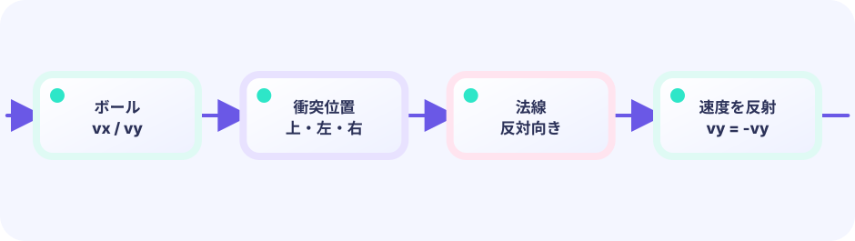

速度ベクトル
1フレームでどれだけ動くかを、X と Y に分けて持ちます。斜めに見える動きも、実は2つの足し算です。
ballX += vx★★☆☆☆ / PLAYABLE
対戦相手は人間ではなく、シンプルなCPU（コンピューターが動かすパドル）です。ボールは「右へどれだけ・下へどれだけ」の2つの速さで動きます。壁やパドルに当たったら、その向きの符号だけひっくり返す。反射の基本です。
はじめて読む人へ
ベクトルは横の速さvxと縦の速さvyを組にしたもの。符号反転は+を-へ変え、壁へ向かう速さを反対向きにします。
このページの1本
説明と次のコードを対応させてから、ゲームで変化を確かめよう。
vx = -vxひとりでも練習
CPUのパドルがボールを追うので、もう一人いなくても反射とベクトルを試せます。vxはX方向、vyはY方向の速さです。壁に当たったら該当する符号を反転します。
vx = 横の速さvy = 縦の速さ壁 → vy = -vy跳ね返る同じ STATE、4つの DRAW
Updateが作った同じ game を、ASCII、ワイヤーフレーム、ドット絵、美麗なスプライトの4通りで描けます。4分割画面へ同時に描いても、Update・入力・物理は一つのままです。DrawはUpdateの直後に必ず呼ばれる相棒ではなく、状態を読む差し替え可能な投影です。
ゲームの状態境界は LEVEL 01 と同じです。ルールはUpdate、Drawの描き方は自由です。ここでは反射・ブロック・体の伸びなど、新しい部品だけを足します。見た目も当たりも図形のままです。

PLAYABLE / WEBASSEMBLY
矢印キー、WASD、ドラッグで自機を動かします。CPUと得点を競います。
DEEP DIVE / REFLECTION
ボールの動きは vx（左右）と vy（上下）のセットです。左右の壁に当たったら vx の符号を、パドルに当たったら vy の符号を反転します。速さの大きさはそのまま、向きだけ変えます。
1フレームでどれだけ動くかを、X と Y に分けて持ちます。斜めに見える動きも、実は2つの足し算です。
ballX += vx当たった面に垂直な成分だけ反転します。たて壁なら vx、よこパドルなら vy です。
vx = -vxパドル中心からのずれ × 0.055 を vx に足します。端で返すほど横に飛び、中央ならほぼ真上。0.055 は「味付け用の小さめの係数」で、大きくすると曲がりの効きが強くなります。
vx += offset * 0.055TRY IT / BOUNCE
「1フレーム進める」でボールが動きます。左右の壁では vx、パドルでは vy の符号が反転します。
速さの大きさはそのまま、向きだけ変わります。
TRY IT · GO
x += vx; y += vy if x < 0 || x > w { vx = -vx } if hitPaddle { vy = -vy }
—
THE BOUNCE RULE
壁: vx = -vxパドルvy = -vy （少し速くしてもOK）符号を反転するだけでは、ボールが少し面の内側にめり込んだ状態が残ってしまいます。すると次のフレームでも「まだ当たっている」と判定され、跳ね返りが何度も起きる「めり込みループ」の原因になります。そこでコードでは符号を反転する前に、ボールの位置を面のすぐ外側へ移し直します（例: g.ballY = 646 でパドルの上に押し出す、math.Max/Min で壁の内側に収める）。これで、めり込んだまま貼りつくことなく、きちんと1回だけ跳ね返ります。
IN THE REAL GAME
毎フレームまず位置を進め、次に壁とパドルを調べます。下のパドルに当たったら上向きにし、当たった位置で左右の成分も少し足します。
CPUは ballX へ向かって毎フレーム最大 3.5 だけ動きます。ボールより 8 ピクセル以上離れているときだけ追うので、ぴったり重ならずに「少し遅れ気味の追従」になります。3.5 はプレイヤーより遅めに感じるよう選んだ上限速度です。
g.ballX += g.vx
g.ballY += g.vy
if g.ballX < 14 || g.ballX > screenWidth-14 {
g.vx = -g.vx
}
if hitPlayerPaddle() {
g.vy = -math.Abs(g.vy) * 1.025
g.vx += (g.ballX - g.playerX) * 0.055
}TODAY — まずここを見る
下のコードがこのゲームの全部です（図形だけで動いています）。コピーして手元で開けます。その前に、上の「まずここを見る」3つだけ追ってください。
package main
import (
"fmt"
"image/color"
"math"
"github.com/hajimehoshi/ebiten/v2"
"github.com/hajimehoshi/ebiten/v2/ebitenutil"
"github.com/hajimehoshi/ebiten/v2/vector"
)
const (
screenWidth = 480
screenHeight = 720
paddleHalfW = 60
ballRadius = 12
)
type game struct {
playerX float64
cpuX float64
ballX float64
ballY float64
ballVX float64 // ボールの横の速さ
ballVY float64 // ボールの縦の速さ
playerScore int
cpuScore int
}
func newGame() *game {
g := &game{
playerX: screenWidth / 2,
cpuX: screenWidth / 2,
}
g.serve(1) // 下向きにサーブ
return g
}
// direction: +1 は下へ、-1 は上へ
func (g *game) serve(direction float64) {
g.ballX = screenWidth / 2
g.ballY = screenHeight / 2
g.ballVX = 3.2
g.ballVY = 4.2 * direction
}
func (g *game) movePlayer() {
if ebiten.IsKeyPressed(ebiten.KeyArrowLeft) || ebiten.IsKeyPressed(ebiten.KeyA) {
g.playerX -= 6
}
if ebiten.IsKeyPressed(ebiten.KeyArrowRight) || ebiten.IsKeyPressed(ebiten.KeyD) {
g.playerX += 6
}
if ebiten.IsMouseButtonPressed(ebiten.MouseButtonLeft) {
x, _ := ebiten.CursorPosition()
g.playerX = float64(x)
}
if ids := ebiten.AppendTouchIDs(nil); len(ids) > 0 {
x, _ := ebiten.TouchPosition(ids[0])
g.playerX = float64(x)
}
g.playerX = math.Max(55, math.Min(screenWidth-55, g.playerX))
}
// CPU はボールの X にゆっくりついていく
func (g *game) moveCPU() {
if g.cpuX < g.ballX-8 {
g.cpuX += 3.5
} else if g.cpuX > g.ballX+8 {
g.cpuX -= 3.5
}
}
func (g *game) bounceBall() {
g.ballX += g.ballVX
g.ballY += g.ballVY
// 左右の壁
if g.ballX < 14 || g.ballX > screenWidth-14 {
g.ballVX = -g.ballVX
g.ballX = math.Max(14, math.Min(screenWidth-14, g.ballX))
}
// 自分のパドル（下）
hitPlayer := g.ballVY > 0 &&
g.ballY >= 646 && g.ballY <= 662 &&
math.Abs(g.ballX-g.playerX) < 66
if hitPlayer {
g.ballY = 646
g.ballVY = -math.Abs(g.ballVY) * 1.025
g.ballVX += (g.ballX - g.playerX) * 0.055
}
// CPU のパドル（上）
hitCPU := g.ballVY < 0 &&
g.ballY <= 74 && g.ballY >= 58 &&
math.Abs(g.ballX-g.cpuX) < 66
if hitCPU {
g.ballY = 74
g.ballVY = math.Abs(g.ballVY) * 1.015
g.ballVX += (g.ballX - g.cpuX) * 0.04
}
g.ballVX = math.Max(-8, math.Min(8, g.ballVX))
}
// --- ここから Update ---
func (g *game) Update() error {
g.movePlayer()
g.moveCPU()
g.bounceBall()
// 上に抜けたらプレイヤーの得点
if g.ballY < -20 {
g.playerScore++
g.serve(1)
}
// 下に抜けたら CPU の得点
if g.ballY > screenHeight+20 {
g.cpuScore++
g.serve(-1)
}
return nil
}
// --- ここから Draw ---
func (g *game) Draw(screen *ebiten.Image) {
screen.Fill(color.RGBA{7, 20, 38, 255})
// 中央の点線
for y := 10; y < screenHeight; y += 30 {
vector.DrawFilledRect(screen, screenWidth/2-2, float32(y), 4, 16, color.RGBA{45, 226, 194, 80}, false)
}
vector.DrawFilledRect(screen, float32(g.cpuX-paddleHalfW), 50, 120, 14, color.RGBA{255, 105, 79, 255}, false)
vector.DrawFilledRect(screen, float32(g.playerX-paddleHalfW), 656, 120, 14, color.RGBA{45, 226, 194, 255}, false)
vector.DrawFilledCircle(screen, float32(g.ballX), float32(g.ballY), ballRadius, color.White, false)
ebitenutil.DebugPrintAt(screen, fmt.Sprintf("CPU %02d", g.cpuScore), 24, 22)
ebitenutil.DebugPrintAt(screen, fmt.Sprintf("YOU %02d", g.playerScore), 400, 688)
ebitenutil.DebugPrintAt(screen, "ARROWS / DRAG", 184, 350)
}
func (g *game) Layout(_, _ int) (int, int) {
return screenWidth, screenHeight
}
func main() {
ebiten.SetWindowSize(screenWidth, screenHeight)
ebiten.SetWindowTitle("Pong — Ebitengine")
if err := ebiten.RunGame(newGame()); err != nil {
panic(err)
}
}
WITHOUT VECTORS
左右と上下を分けないと、壁ではねたあとの方向をきれいに書けません。
WITH REFLECTION
本物の物理エンジンがなくても、符号をひっくり返すだけで「はねた！」感じが出ます。
YOUR FIRST RULE
games/core/pong/main.go の game に winner string を足します。Update の g.playerScore++ と g.cpuScore++ の直後で、どちらかが3点なら winner を決めて以後の移動を止める分岐を足します。Draw は winner を表示するだけ。go test ./... とローカル実行で確認します。
FEEDBACK